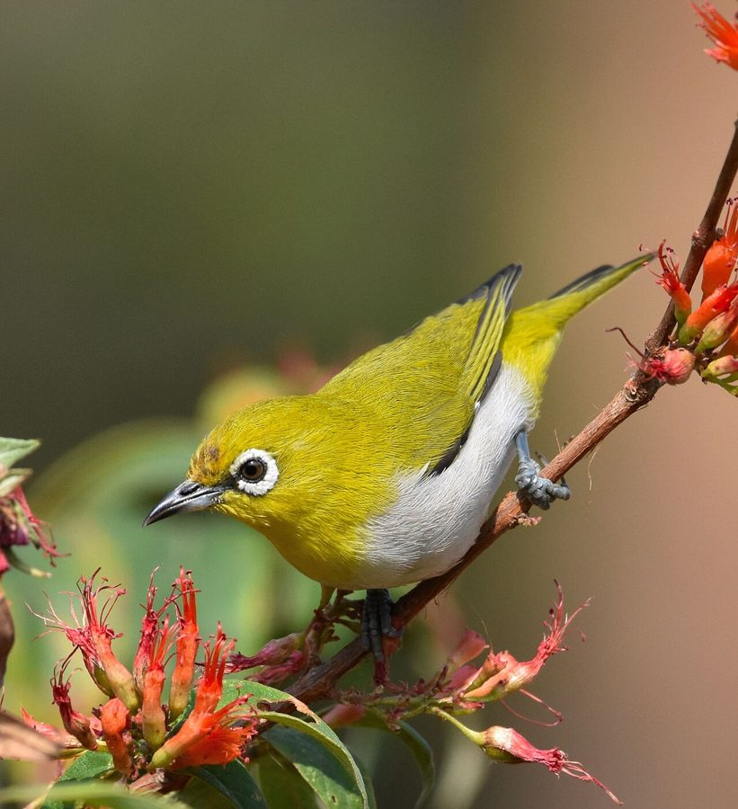

बबूनाIndian White-eye
Zosterops palpebrosus · Zosteropidae · BRD-0170

- Scientific name वैज्ञानिक नाम
- Zosterops palpebrosus (Temminck, 1824)
- Family कुल
- Zosteropidae
- Hindi हिंदी
- बबूना
- Local names स्थानीय नाम
- babuna, baboona, indian white eye, white eye
- Status here यहाँ की स्थिति
- native
- Movement आवागमन
- Resident, here all year
- Known from कहाँ दर्ज
- Others have published records from the Basti–Ayodhya districts बस्ती–अयोध्या के ज़िलों से दूसरों के प्रकाशित अभिलेख
- IUCN IUCN
- LC
- Review समीक्षा
- audited and independently read
When to look कब देखें
Present all year. साल भर मौजूद।
बबूना / Indian White-eye
Zosterops palpebrosus (Temminck, 1824) — Zosteropidae
बबूना — एक छोटी, हरी चिड़िया जिसकी आँख के चारों तरफ़ सफ़ेद रंग की एक सुंदर अँगूठी होती है। इसलिए इसे "सफ़ेद आँख" कहते हैं। यह गाँवों के बागों, आम के पेड़ों, और शहर के बाग़ों में झुंड में रहती है। यह बहुत ही चुस्त चिड़िया है — हमेशा इधर-उधर उड़ती रहती है। गर्मी में जब आम पकते हैं, तब ये चिड़ियाँ आम के बाग़ों में बहुत दिखाई देती हैं। फूल और शहद भी चाटती है, पर सब से ज़्यादा पका फल खाती है।
Quick Identification त्वरित पहचान
| Feature | Description |
|---|---|
| Size | Small, delicate; 11–12 cm long |
| Plumage | Olive-green above; pale yellowish-green below |
| Eye-ring | Distinctive white ring around eye; highly diagnostic |
| Bill | Small, pointed, dark; slightly curved |
| Legs | Short, yellowish or greenish |
| Tail | Proportionally short; greenish |
| Wings | Green with some lighter feather edges |
| Behaviour | Restless, acrobatic; often hanging upside-down while feeding |
| Voice | Chirpy, conversational calls; simple song |
Field tip: In fruit-bearing trees in gardens and orchards, look for a small, olive-green bird with a distinctive white ring around each eye. They often feed in small loose flocks, hanging from branches like acrobats. The white eye-ring is diagnostic — few other Indian birds show this feature.
हिंदी — कैसे पहचानें: छोटी हरी चिड़िया, आँख के चारों तरफ़ सफ़ेद अँगूठी (ऐनक जैसी)। झुंड में रहती है। गाँव के बाग़ों में दिखती है।
Morphology आकारिकी
Biometrics:
| Measurement | Range |
|---|---|
| Total length | 110–120 mm |
| Wing (folded) | 50–56 mm |
| Tail | 40–45 mm |
| Bill | 8–10 mm |
| Tarsus | 15–18 mm |
| Weight | 7–12 g |
Plumage: Olive-green on the upperparts (head, back, wings, and tail). Pale yellowish-green on the underparts (throat, breast, and belly), sometimes more yellowish on the abdomen. Undertail coverts often yellower.
Eye-ring (lore): Distinctive white or pale ring encircling the eye, like spectacles or binoculars. This feature is diagnostic and gives the bird both its common name and its scientific genus name (Zosterops = "girdled eye").
Bill: Small, pointed, slightly curved; dark in colour. Adapted for probing into flowers for nectar and for gleaning insects.
Legs and feet: Short; pale yellowish or greenish; adapted for perching on twigs and branches.
Eyes: Dark, relatively large for the bird's size.
Sexes: No obvious sexual dimorphism; males and females similar in appearance.
Juveniles: Similar to adults but duller green; eye-ring may be less prominent initially.
Vocalisations: Contact calls are soft, chittering notes and quiet chirps. In flocks, the constant soft calling is distinctive. Song is a simple, repetitive warbling phrase.
हिंदी: हरी चिड़िया, छोटी। आँख के चारों तरफ़ सफ़ेद अँगूठी सब से आसान पहचान। बहुत मीठी आवाज़।
Behaviour & Ecology व्यवहार और पारिस्थितिकी
The Indian White-eye is a small, highly social frugivore and nectarivore that typically feeds in loose flocks. It is one of the most acrobatic and mobile of Indian birds, hanging from branches and twigs in search of insects, fruit, and nectar.
Feeding behaviour: Highly versatile forager. Feeds on:
- Fruits and berries (primary diet): mango, guava, figs, berries of various plants
- Nectar from flowers (particularly during flowering season)
- Small insects and spiders (caught by gleaning from foliage or in short aerial sallies)
- Occasionally feeds on buds and young leaves
Feeding technique is characteristically acrobatic — hangs upside-down from branches, moves along twigs, and reaches into clusters of flowers or fruit. Often hangs beneath branches while feeding.
Social behaviour: Highly gregarious; usually in small loose flocks. Flocks remain in loose contact through constant soft calling. Flocks may move together through territory, foraging in different trees.
Habitat use: Primarily in gardens with fruit-bearing trees, orchards, cultivated areas with scattered trees, and forest edges. Adapts well to urban and rural gardens. Avoids dense forest.
Daily activity: Active throughout the day; less active during extreme heat. Feeds heavily during fruiting seasons.
Seasonality: Year-round resident in most of India; abundance may vary with fruiting phenology and availability of cultivated fruit crops.
Nomadic behaviour: Some local movements may occur in response to fruiting cycles of preferred food plants.
हिंदी: झुंड में रहती है, अकेली नहीं। गाँव के बाग़ों में रहती है। फल खाती है, फूल का शहद पीती है, कीड़े भी खाती है।
Life Cycle / Phenology जीवन चक्र
| Stage / season | Notes |
|---|---|
| Breeding season | February–August; peak March–May |
| Nest | Suspended cup nest; typically in fruit trees or ornamental trees |
| Clutch size | 2–3 eggs; sometimes 4 |
| Incubation period | 10–12 days |
| Fledging period | 10–12 days |
| Brood | Usually 1–2 broods; sometimes 3 in areas with abundant food |
| Non-breeding season | Limited; birds remain active year-round |
| Moult | Post-breeding; typically July–September |
| Longevity | Unknown in wild; likely 3–4 years in the field |
Seasonal pattern in eastern UP:
- January–February: Non-breeding; feeding on stored fruit and insects
- March–May: Breeding season; peak nest-building and egg-laying
- June–July: Fledging of young; post-breeding moult begins
- August–January: Non-breeding; feeding on autumn and early-monsoon fruit
- Year-round presence: Resident throughout the region
हिंदी: फरवरी से अगस्त तक अंडे देते हैं। पेड़ों की डाली पर घोंसला बनाते हैं। साल भर रहते हैं।
Host Plants or Prey आहार
Fruit diet (primary):
- Mango (Mangifera indica)
- Guava (Psidium guajava)
- Figs (Ficus spp.)
- Various wild berries
- Fruits of Lantana
- Fruits of other cultivated and wild plants
Nectar sources:
- Mahua flowers
- Various flowering trees and shrubs
- Cultivated flowers
Insects and spiders:
- Small insects gleaned from foliage
- Insects caught during aerial sallies
- Spiders and spider eggs
हिंदी: आम, अमरूद, अंजीर खाता है। फूलों का शहद भी पीता है। छोटे कीड़े भी खाता है।
Predators / Natural Enemies शत्रु
- Raptors: Shikra, Eurasian Sparrowhawk, and other small hawks
- Snakes: Particularly racer and rat snakes at nest sites
- Corvids: Crows may harass or prey on eggs and chicks
- Cats and other predators: Domestic cats in gardens; small mongooses
The small flock size and constant vigilance provide some protection through group defence.
हिंदी: छोटे बाज़, कौवे, सँपों से खतरा है।
Agricultural / Human Relevance कृषि प्रासंगिकता
Beneficial bird: Feeds on insects and spiders, potentially providing pest control in orchards. Disperses seeds of various plants through frugivory, contributing to plant regeneration.
Potential pest: In some regions, large flocks can cause damage to cultivated fruit crops, particularly guava, figs, and mangoes. However, damage is generally minor and birds are valued overall.
Protected under law: Like all wild birds in India, protected under the Wildlife (Protection) Act 1972, Schedule IV.
Cultural significance: The white eye-ring has made this bird a popular subject in Indian folk traditions and proverbs. No specific traditional uses documented.
हिंदी: यह विधि अधिनियम 1972 की अंतर्गत संरक्षित है। गाँवों के बागों में कीड़ों को खाता है।
Expected Locally स्थानीय रूप से अपेक्षित
Not a field record. Written from published accounts for eastern Uttar Pradesh. No confirmed local sighting yet — if you have seen it, that is what the atlas needs.
अभी तक स्थानीय पुष्टि नहीं। यह विवरण प्रकाशित स्रोतों से है, किसी अवलोकन से नहीं।
Not a field record. This species' presence is based on its known distribution in India. GBIF holds published records from the wider Awadh–Purvanchal plain and from Basti–Ayodhya districts.
ये दूसरों के प्रकाशित अभिलेख हैं, परियोजना के नहीं। यह पहले से दर्ज है।
Expected year-round in gardens, orchards, and cultivated areas with fruit-bearing trees throughout Basti district and eastern Uttar Pradesh. Abundance varies with fruiting phenology; particularly abundant during fruit seasons (April–June for mangoes; July–September for other fruits).
A dated photograph of the bird at a fruiting tree, showing the characteristic white eye-ring, would confirm a local record.
Distribution वितरण
Global range: Indian subcontinent and Sri Lanka; endemic to South Asia. A widespread and common bird throughout India.
In India: Recorded from sea level to approximately 2000 m elevation; occurs in all states with suitable habitat.
In Uttar Pradesh: Widespread in gardens, orchards, and cultivated areas throughout the state; abundant in eastern districts.
In Basti district / eastern UP: Common year-round in gardens, orchards, and areas with fruit trees; particularly abundant during fruit seasons.
Research Questions शोध प्रश्न
- कौन से फलों को बबूना सब से ज़्यादा खाता है, और क्या यह बदलता है मौसम और साल के अनुसार?
- How far do flocks move from their feeding areas, and is there evidence of nomadic behaviour in response to fruiting phenology?
- क्या शहर के बागों में गाँव के बागों से ज़्यादा बबूना होते हैं?
- What is the diet composition (percentage of fruits vs. insects) throughout the year?
- क्या बड़े झुंड फलों के नुक़सान के लिए जिम्मेदार हैं, और क्या छोटे बागों में बड़े बागों से ज़्यादा नुक़सान होता है?
- How does breeding success vary with fruiting phenology and food availability?
Similar Species मिलती-जुलती प्रजातियाँ
| Species | Key Difference | Hindi |
|---|---|---|
| Oriental White-eye (Zosterops palpebrosus erythropleura) — eastern subspecies, if treated separately | Extremely difficult to distinguish without expert examination; formerly considered same species | दूसरी सफ़ेद आँख |
| Green Warblers (Phylloscopus spp.) | Larger; no white eye-ring; different behaviour (sallying for insects, not frugivorous) | सवेरे की चिड़िया, बड़ी |
Field rule: A small olive-green bird with a distinctive white ring around each eye, usually in a loose flock in a fruit-bearing tree — this is the Indian White-eye. No other common Indian bird shows the combination of small size, green colour, and white eye-ring.
Taxonomy & Classification वर्गीकरण
Original description. The species was described by Coenraad Jacob Temminck in 1824 in Planches Coloriées d'Oiseaux as Motacilla palpebrosus. The genus Zosterops was erected later. Type locality is Java; however, the species occurs throughout South Asia and is now known to be widespread in India.
Subspecies. Multiple subspecies are recognised, with Z. p. palpebrosus occurring in much of the Indian subcontinent. Eastern populations (including Uttar Pradesh) are sometimes assigned to Z. p. erythropleura, though subspecific boundaries are not well-defined.
Family and order placement. Order Passeriformes (perching birds); family Zosteropidae (white-eyes). The family comprises approximately 55 species, distributed throughout Africa, Asia, and Australasia.
Phylogenetic notes. Zosterops is one of the most successful genera of small passerines, showing remarkable ecological adaptability and geographic diversification. Indian populations represent a well-established lineage.
IUCN status rationale. The species is assessed as Least Concern (LC) due to its wide range, abundance, and adaptability to human-modified landscapes. Populations appear stable or increasing.
हिंदी: सदियों से भारत में है। दुनिया भर में इसी तरह की सफ़ेद आँखों वाली चिड़ियाँ हैं।
Photo Gallery फोटो गैलरी
No photos yet — add field photos to media/species/indian_white_eye/ and run node scripts/sync_photos.js.
Wanted photos:
- Close-up showing white eye-ring
- Flock feeding on fruit
- Individual hanging from a branch
- Pair at nest site
References संदर्भ
- Temminck, C.J. (1824). Planches Coloriées d'Oiseaux. Livr. 2. Paris. [original description as Motacilla palpebrosus]
- Ali, S. & Ripley, S.D. (1973). Handbook of the Birds of India and Pakistan. Vol. 8 (Warblers to Redstarts). Oxford University Press, Delhi. Pp. 157–159.
- Grimmett, R., Inskipp, C. & Inskipp, T. (2011). Birds of the Indian Subcontinent: The Ripley Guide. 2nd edn. Helm Identification Guides, Oxford. Vol. 2, pp. 471–472.
- GBIF Occurrence Data — Zosterops palpebrosus, India (2024).
- Rasmussen, P. C. & Anderton, J. C. (2012). Birds of South Asia: The Ripley Guide. 2nd ed. Smithsonian Institution and Lynx Edicions.
- BirdLife International. Zosterops palpebrosus. IUCN Red List of Threatened Species. https://www.iucnredlist.org/
Source file: species/fauna/birds/indian_white_eye.md